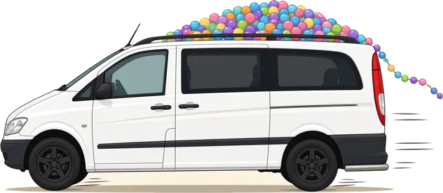
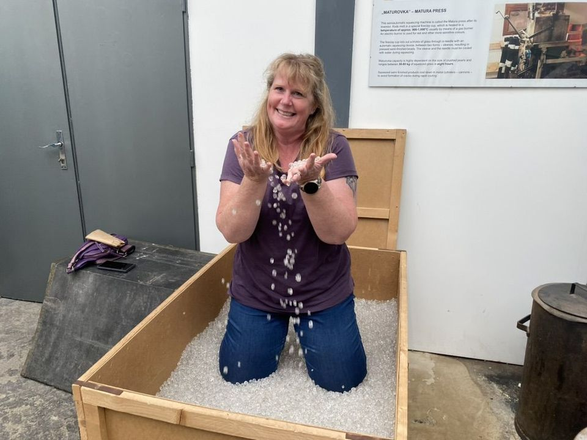
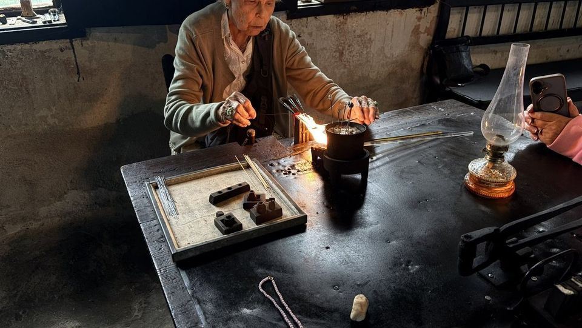
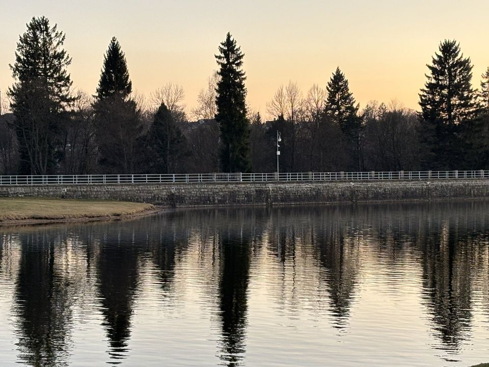

Day trips

A day trip is a perfect way to explore bead production and squeeze in some shopping, even if you’re short on time.



A typical day trip
Pickup from your Prague hotel at 8 a.m., then to Jablonec nad Nisou — a must-visit town for bead lovers. The drive typically takes about an hour and a half.
First stop is a lampwork factory and workshop. You’ll watch a group of highly skilled women make it look effortless, and you can even try it yourself. You’ll quickly realise that crafting even a colourful glass blob isn’t as easy as it seems. They offer a stunning collection of lampwork beads, plus a fantastic array of jewellery.
Next we explore how beads are pressed, tumbled, faceted and fire-polished. We’ll also visit the Museum of Beads and Glass before heading off to shop.
We’re flexible and aim to tailor the rest of the day to your preferences, getting you back to your Prague hotel between 5 and 7 p.m.
This is just a guide — email us to discuss the possibilities.
If you have a little extra time, Czechia has many other places worth seeing — castles, cathedrals and quiet historic corners. See hidden treasures.